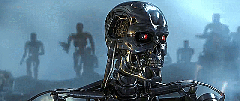

INTELIGÊNCIA ARTIFICIAL: O QUE É, COMO FUNCIONA E EXEMPLOS

Para além das obras de ficção e das polêmicas e debates éticos, a Inteligência Artificial (IA) é uma tecnologia utilizada extensivamente no nosso dia a dia.
Dos assistentes de voz em nossos smartphones aos chatbots de atendimento, passando pela automação em grandes indústrias, a IA revela a todo instante, novos potenciais e formas de auxiliar o ser humano nas mais diferentes áreas.
Neste post, descubra afinal o que é Inteligência Artificial, quando surgiu, conheça suas aplicações e entenda o que o futuro dessa tecnologia nos reserva. Acompanhe!
O que é a Inteligência Artificial (IA)?
Inteligência Artificial é um conceito que pertence à computação e consiste na capacidade que máquinas (físicas, softwares e outros sistemas) têm de interpretar dados externos, aprender a partir dessa interpretação e utilizar o aprendizado para resolver tarefas específicas e atingir objetivos determinados.
Em outras palavras, a Inteligência Artificial busca fazer com que as máquinas pensem como os seres humanos, ou seja, que possam analisar, raciocinar, aprender e decidir de maneira lógica e racional.
Afinal, como surgiu a Inteligência Artificial?
A história da Inteligência Artificial remete aos primeiros computadores, em meados do século XX. As primeiras pesquisas originaram na década de 1950, com base nos estudos de Alan Turing.
O termo “Inteligência Artificial” foi cunhado em 1956, na conferência de Dartmouth. John McCarthy, um dos idealizadores do conceito, então definiu IA como:
“Fazer a máquina comportar-se de tal forma que seja chamada inteligente caso fosse este o comportamento de um ser humano.”
John McCarthy
Já nos anos 1960, o Departamento de Defesa dos Estados Unidos iniciou suas primeiras pesquisas, que consistiam em treinar um computador para emular raciocínios humanos básicos.

Esses trabalhos foram o pontapé inicial para o aprofundamento de pesquisas na área. Os estudos e projetos envolvendo Inteligência Artificial foram intensificados a partir de 1980, impulsionados pelos avanços da tecnologia e as necessidades de diferentes indústrias.
Como funciona uma Inteligência Artificial?
O funcionamento da Inteligência Artificial se baseia na combinação de grandes volumes de dados digitais e algoritmos inteligentes. Respectivamente, eles permitem ao sistema ler e interpretar padrões e informações para aprender automaticamente.
É importante destacar que, para que esse aprendizado aconteça, o sistema de Inteligência Artificial precisa ser constantemente alimentado com novos dados.
Assim, o funcionamento da IA baseia-se em:
Modelo de dados: estruturas utilizadas para processar, categorizar e analisar dados;
Big Data: disponibilização de grandes volumes de dados;
Poder de processamento: trata-se da capacidade operacional do sistema em processar as informações.
Para que todo esse processo aconteça, no entanto, é necessário combinar diferentes tecnologias que, juntas, possam, conferir à máquina a capacidade de imitar o raciocínio lógico humano.